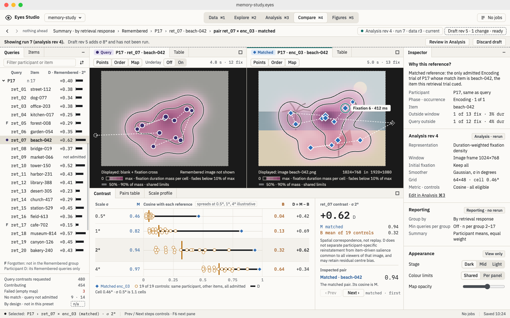
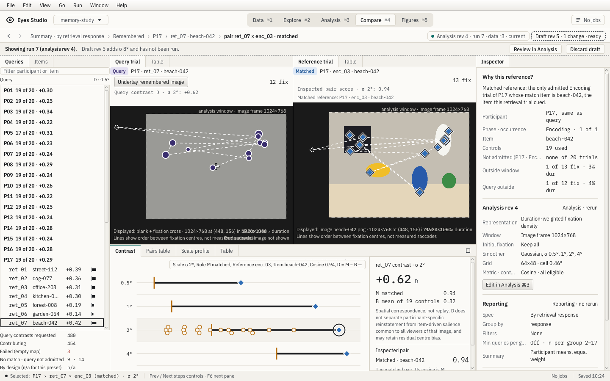
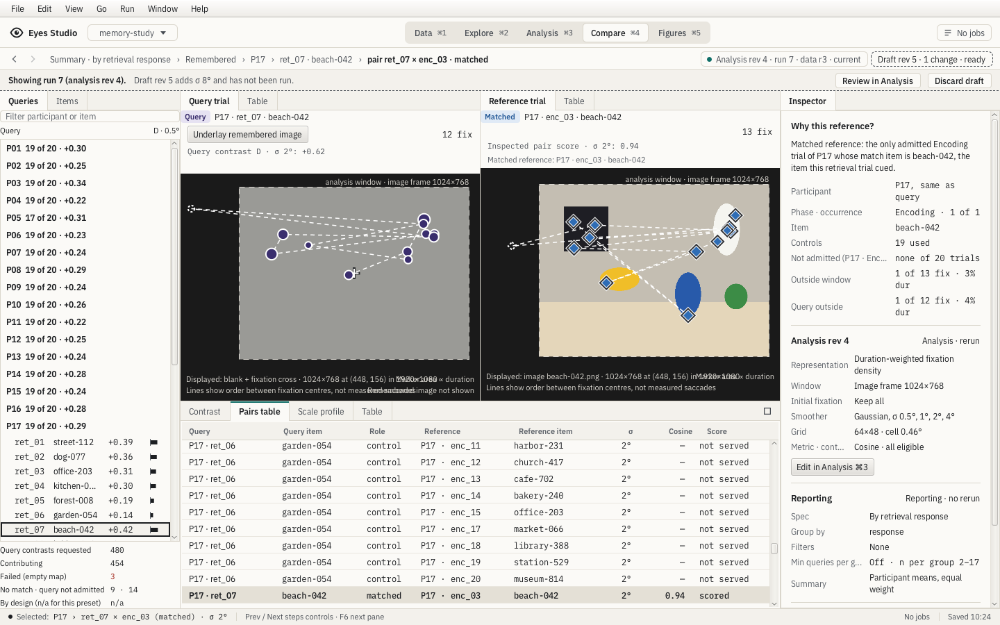
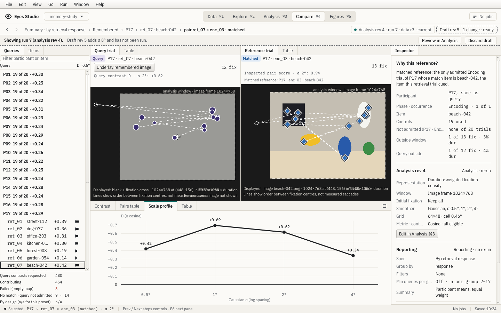
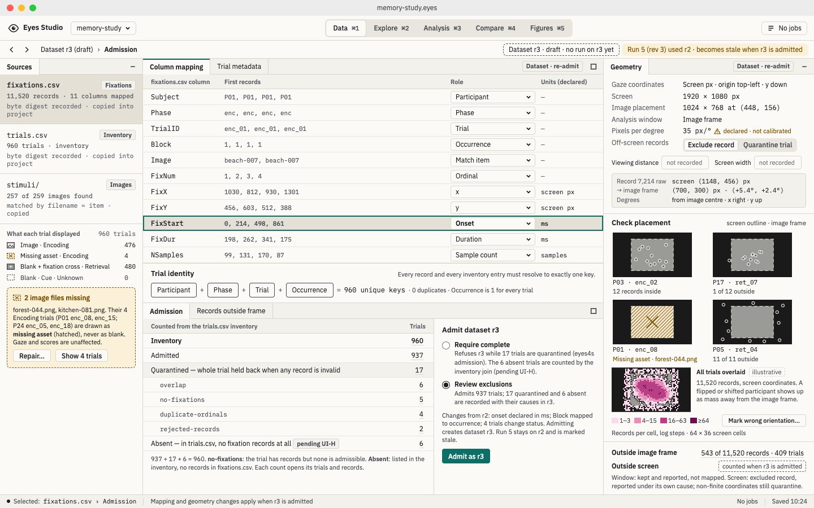
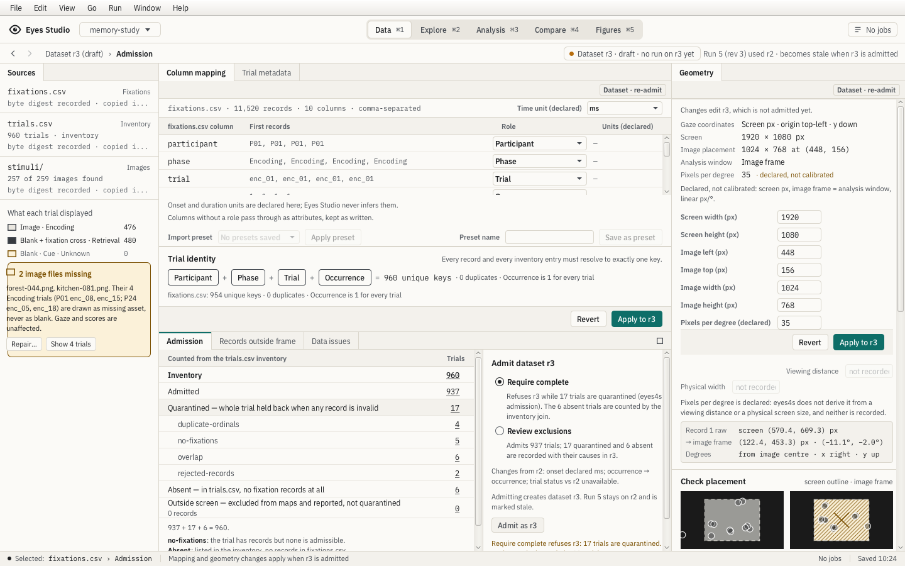

Reviewer: codex-release-session-20261020 · 2026-10-20. Full gate and landing pending. This reviews the two existing feature tickets, not the complete boards.
The query Scale profile refusal was reproduced and fixed; JVM/JS regressions and mounted FX rendering checks pass. Data uses the reusable scrolling form and explicit declared units. The extra Table twin is an accepted accessibility deviation. Current trial-caption overlap remains separately tracked.
Hashes, scope, checks and deviations





